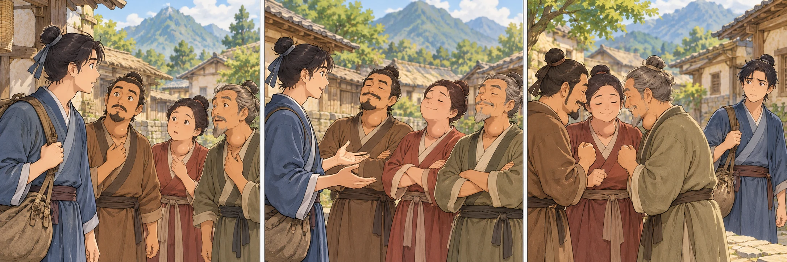
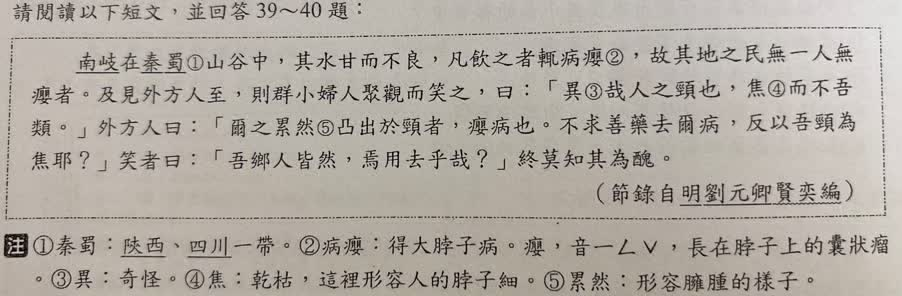
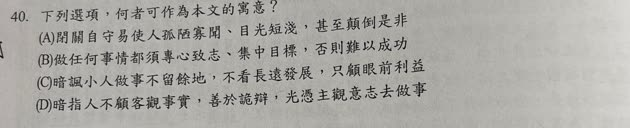

分享原卷｜第40題
完整原題
作答所需文章／材料
南岐在秦蜀①山谷中，其水甘而不良，凡飲之者輒病癭②，故其地之民無一人無癭者。及見外方人至，則群小婦人聚觀而笑之，曰：「異③哉人之頸也，焦④而不吾類。」外方人曰：「爾之累然⑤凸出於頸者，癭病也。不求善藥去爾病，反以吾頸為焦耶？」笑者曰：「吾鄉人皆然，焉用去乎哉？」終莫知其為醜。 ——節錄自明・劉元卿《賢奕編》 【原卷註釋】 ①秦蜀：陝西、四川一帶。 ②病癭：得大脖子病。癭，音ㄧㄥˇ，長在脖子上的囊狀瘤。 ③異：奇怪。 ④焦：乾枯，這裡形容人的脖子細。 ⑤累然：形容臃腫的樣子。先想一想，再查看答案、解說與原圖
逐項解析
| 選項與原句 | 判讀 | 句意與判斷理由 |
|---|---|---|
| (A) 閉關自守易使人孤陋寡聞、目光短淺，甚至顛倒是非 | 應選 | 涵蓋封閉見識、不察己過、把病態當正常標準的寓意。 |
| (B) 做任何事情都須專心致志、集中目標，否則難以成功 | 不選 | 沒有討論專注工作或目標集中的議題。 |
| (C) 暗諷小人做事不留餘地，不看長遠發展，只顧眼前利益 | 不選 | 未描寫眼前利益與長遠利益的取捨。 |
| (D) 暗指人不顧客觀事實，善於詭辯，光憑主觀意志去做事 | 不選 | 不顧事實可部分相合，但善於詭辯不是此寓言最直接的核心。 |
詳細說明與解題步驟
【完整白話】
南岐在陝西、四川一帶的山谷中，那裡的水喝來甘甜，水質卻不好。文章說飲用的人常患頸部腫大的癭病，所以當地沒有人沒有這種病。
外地人來了，當地一些見識淺陋的人和婦女就圍觀嘲笑，說：「這人的脖子真奇怪，細瘦得不像我們。」
外地人說：「你們頸部臃腫凸出的，是癭病。你們不找好藥治病，反而認為我的脖子乾細嗎？」嘲笑的人卻說：「我們鄉里的人全是這樣，何必去掉呢？」到最後，他們也不知道自身的問題。
【字詞與解讀範圍】
不吾類是不像我們，否定句中代詞賓語前置；焉用是何必；去是去除；莫知是沒有人知道。群小在此含有見識淺陋的貶義，不把小婦人另當成平民婦女的固定詞。
原卷對癭的古語註釋照留，白話以頸部腫大說明。不能僅憑這則寓言就把每個人都診斷成甲狀腺腫瘤，也不把原文未說的缺碘機轉補成確定病因；本題要判讀的是人的認知與態度。
【從故事走向一般道理】
當地人把熟悉、多數人的狀態當成唯一標準，既看不見自身問題，也排斥外界提醒，甚至用錯誤標準嘲笑正常人。故事諷刺封閉、自以為是所造成的見識狹隘與是非顛倒，A最完整。
B專心致志是另一種工作態度，本文沒有討論分心。C只顧眼前利益、做事不留餘地，也缺少依據。D的不顧客觀事實雖有一部分貼近，但把人物概括成善於詭辯，沒有A對封閉認知及價值顛倒的概括準確。
多數人共有某種狀態，不足以證明那就是正確或健康；遇到不同看法，仍要檢查理由與事實。

① 只見過鄉里，就把差異當怪異
南岐人習慣了鄉里都有癭的樣子，看到外地人反而嘲笑他的脖子細、不像自己。問題是見識封閉，把熟悉的狀態當成判斷別人的唯一標準。
② 外人指出問題，他們仍用多數回應
外地人提醒他們患病，應求藥去病；他們卻說「吾鄉人皆然，焉用去乎哉？」只是大家都這樣，不能證明這樣就是對的。他們沒有檢查提醒是否有道理。
③ 從封閉見識，讀出顛倒是非
「終莫知其為醜」說他們始終沒有察覺自身問題，還把正常人的差異當錯誤。A同時扣住孤陋寡聞、目光短淺與是非顛倒，比只說主觀行事更完整。
④ 把「大家都一樣」當成正確標準，才是問題
答案：A，封閉見識可能顛倒是非
- 看故事的態度與判斷方式，不只看表面病狀。
- B的專心做事、C的眼前利益，故事沒有談。
- D提到不顧事實，但「善於詭辯」不如A切合全文。
核對註記：已依原卷或完整文字核對並獨立解題；對應教材課次未確認，歸綜合。
原圖（僅本題）

